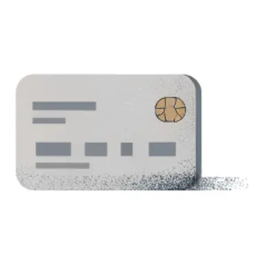
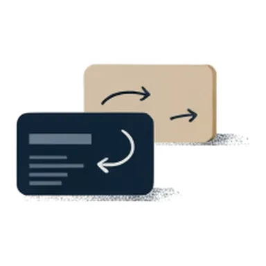
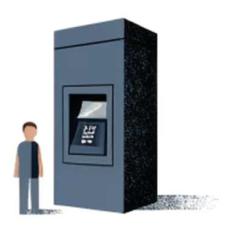
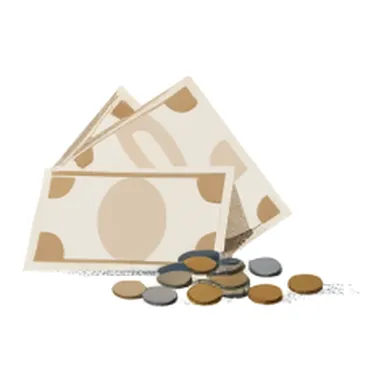
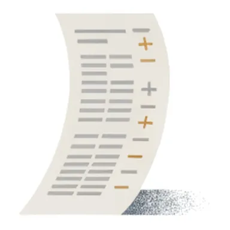
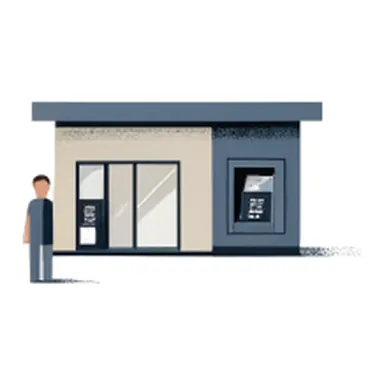
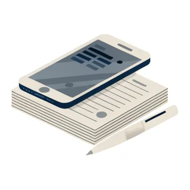
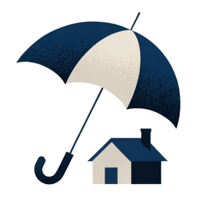

배우기 전에 먼저 해 보세요. 틀려도 괜찮아요.
Ich hätte gern mehr Zeit.은 무슨 뜻일까요?
hätte gern은 바라는 것을 말해요.
계약을 끝내는 것을 독일어로 뭐라고 할까요?
kündigen은 계약을 해지하는 것이에요.
A2.2 Mittendrin · Lektion 4
돈과 계약
음성은 준비 중이에요. 듣기 단추와 받아쓰기는 음성이 올라오면 쓸 수 있어요. 그동안은 글을 읽으면서 공부해요.
독일에서 살려면 계좌가 있어야 하고, 휴대폰과 보험 같은 계약도 맺어야 해요. 계약에는 기간과 해지 기한이 있어서 서명하기 전에 잘 물어봐야 해요. 이 과에서는 바라는 것과 제안을 부드럽게 말하는 würde, könnte, hätte, wäre를 배워요.
문법 Konjunktiv II: würde, könnte, hätte, wäre, Pronomen im Dativ und Akkusativ (Können Sie es mir schicken?)
과제대학학생 계좌를 만들고 휴대폰 요금제 고르기
과제직장급여 계좌를 만들고 보험 상담 받기
이 과를 마치면 계좌를 만들고 요금제를 고르고, 계약 조건을 묻고, 바라는 것과 제안을 말할 수 있어요.
이 과에서 쓸 말이에요.
배우기 전에 먼저 해 보세요. 틀려도 괜찮아요.
Ich hätte gern mehr Zeit.은 무슨 뜻일까요?
hätte gern은 바라는 것을 말해요.
계약을 끝내는 것을 독일어로 뭐라고 할까요?
kündigen은 계약을 해지하는 것이에요.
Lektion 3의 낱말 다섯 개를 다시 떠올려 보세요.
4월의 월요일 오전, 은행 지점이에요. Jiu는 이번 달에 대학 공부와 카페 일을 시작했어요. 계좌를 만들러 왔어요.
들으면서 찾아보세요. Jiu는 카드와 비밀번호를 어떻게 받나요?
목요일 오후, 보험 회사 상담실이에요. Dohyun이 가족을 위한 보험을 알아보러 왔어요.
들으면서 찾아보세요. 이 보험은 한 달에 얼마인가요?
저녁, Sora의 집이에요. Sora가 남편 Minho와 이번 달 휴대폰 요금 이야기를 해요.
들으면서 찾아보세요. 해지 편지는 누가 쓰나요?
세 대화를 듣고 답하세요.
Jiu는 어떤 계좌를 만드나요?
Jiu möchte eine Kreditkarte.
보통 은행 카드만 하기로 했어요.
Jiu는 카드와 비밀번호를 어떻게 받나요?
배상 책임 보험은 한 달에 얼마인가요?
Der Vertrag endet nach einem Jahr automatisch.
해지하지 않으면 자동으로 이어져요.
보험을 끝내려면 언제 해지해야 하나요?
Sora와 Minho는 휴대폰 요금으로 한 달에 얼마를 내나요?
Minho schreibt die Kündigung.
Sora가 쓰기로 했어요.
낱말 46개예요. 명사는 der, die, das를 색으로 구분했어요.
das Konto, die Konten 계좌
Ich brauche ein Konto.계좌가 필요해요.
das Girokonto, die Girokonten 입출금 계좌
Das Girokonto ist für Studierende kostenlos.그 입출금 계좌는 학생에게 수수료가 없어요.
eröffnen (hat eröffnet) (계좌를) 만들다, 열다
Ich habe ein Konto eröffnet.계좌를 만들었어요.

die Bankkarte, die Bankkarten 은행 카드
Die Bankkarte kommt per Post.은행 카드는 우편으로 와요.
die Kreditkarte, die Kreditkarten 신용 카드
Kann ich mit Kreditkarte zahlen?신용 카드로 낼 수 있어요?
die PIN 비밀번호
Ich habe meine PIN vergessen.비밀번호를 잊어버렸어요.
die IBAN 계좌 번호
Meine IBAN beginnt mit DE.제 계좌 번호는 DE로 시작해요.
überweisen (hat überwiesen) 이체하다, 돈을 보내다
Ich überweise die Miete.집세를 이체해요.

die Überweisung, die Überweisungen 이체
Die Überweisung dauert einen Tag.이체는 하루 걸려요.
abheben (hat abgehoben) (돈을) 찾다
Ich hebe hundert Euro ab.100유로를 찾아요.

der Geldautomat, die Geldautomaten 현금 인출기
Der Geldautomat ist neben dem Eingang.현금 인출기는 입구 옆에 있어요.

das Bargeld 현금
Ich habe kein Bargeld dabei.현금이 없어요.

der Kontoauszug, die Kontoauszüge 거래 내역서
Der Kontoauszug kommt jeden Monat.거래 내역서는 달마다 와요.
das Online-Banking 인터넷 뱅킹
Mit Online-Banking geht es schnell.인터넷 뱅킹으로 하면 빨라요.
sparen (hat gespart) 돈을 모으다, 아끼다
Ich spare für den Urlaub.휴가 가려고 돈을 모아요.

die Filiale, die Filialen 지점
Die Filiale ist bis sechzehn Uhr geöffnet.그 지점은 16시까지 열어요.
die Beraterin, die Beraterinnen 상담원 (여자)
Die Beraterin erklärt den Vertrag.상담원이 계약을 설명해요.
benutzen (hat benutzt) 쓰다, 이용하다
Ich benutze das Konto online.저는 계좌를 온라인으로 써요.

der Handyvertrag, die Handyverträge 휴대폰 계약
Mein Handyvertrag ist zu teuer.제 휴대폰 계약은 너무 비싸요.
der Tarif, die Tarife 요금제
Dieser Tarif kostet fünfzehn Euro im Monat.이 요금제는 한 달에 15유로예요.
die Laufzeit, die Laufzeiten 계약 기간
Die Laufzeit ist ein Jahr.계약 기간은 1년이에요.
kündigen (hat gekündigt) 해지하다
Ich möchte den Vertrag kündigen.계약을 해지하고 싶어요.
die Kündigung, die Kündigungen 해지, 해지 편지
Ich schreibe heute die Kündigung.오늘 해지 편지를 써요.
die Kündigungsfrist, die Kündigungsfristen 해지 기한
Die Kündigungsfrist ist ein Monat.해지 기한은 한 달이에요.
abschließen (hat abgeschlossen) (계약을) 맺다
Ich schließe einen Vertrag ab.계약을 맺어요.

die Versicherung, die Versicherungen 보험
Ich brauche eine Versicherung.보험이 필요해요.
die Haftpflichtversicherung 배상 책임 보험
Die Haftpflichtversicherung zahlt den Schaden.배상 책임 보험이 손해를 내 줘요.
der Schaden, die Schäden 손해, 피해
Wer zahlt den Schaden?손해는 누가 내요?
die Bedingung, die Bedingungen 조건
Ich lese zuerst die Bedingungen.저는 먼저 조건을 읽어요.
der Anbieter, die Anbieter (서비스를 파는) 회사
Wir wechseln den Anbieter.우리는 통신사를 바꿔요.
wechseln (hat gewechselt) 바꾸다
Ich möchte den Tarif wechseln.요금제를 바꾸고 싶어요.
automatisch 자동으로
Der Vertrag verlängert sich automatisch.계약은 자동으로 이어져요.
schriftlich 글로, 서면으로
Sie müssen schriftlich kündigen.글로 해지하셔야 해요.
im Monat 한 달에
Das kostet sieben Euro im Monat.한 달에 7유로예요.
unbedingt 꼭, 반드시
Diese Versicherung braucht man unbedingt.이 보험은 꼭 있어야 해요.
Ich würde gern … ~하고 싶어요
Ich würde gern mehr reisen.여행을 더 많이 하고 싶어요.
Ich wäre gern … ~이면 좋겠어요
Ich wäre gern schon fertig.벌써 다 끝냈으면 좋겠어요.
Wir könnten … ~하면 어때요, ~할 수 있을 거예요
Wir könnten den Anbieter wechseln.통신사를 바꾸면 어때요?
Das wäre super. 그러면 정말 좋겠어요.
Ein Ausflug im Sommer? Das wäre super.여름에 나들이요? 그러면 정말 좋겠어요.
der Wunsch, die Wünsche 바람, 바라는 것
Ich habe einen Wunsch.바라는 게 하나 있어요.
der Vorschlag, die Vorschläge 제안
Ich habe einen Vorschlag.제안이 하나 있어요.
vorschlagen (du schlägst vor, hat vorgeschlagen) 제안하다
Ich schlage einen Termin vor.날짜를 하나 제안할게요.
sich entscheiden (hat sich entschieden) 결정하다
Ich habe mich für das Girokonto entschieden.저는 입출금 계좌로 하기로 했어요.
überlegen (hat überlegt) 생각해 보다
Ich muss noch überlegen.아직 생각해 봐야 해요.
weniger 더 적게
Ich würde gern weniger zahlen.덜 내면 좋겠어요.
normal 보통의
Ich nehme die normale Bankkarte.저는 보통 은행 카드로 할게요.
이 과의 낱말로 여덟 문제를 풀어요.
ich와 er, sie의 모양이 같아요.
hätte는 haben에서, wäre는 sein에서 나왔어요.
규칙
würde와 Infinitiv는 실제로 하는 일이 아니라 하고 싶은 일, 하면 좋을 일을 말해요. würde gern은 '~하고 싶다'는 바람이에요. gern 없이 쓰면 '나라면 ~하겠다'는 부드러운 조언이 돼요. Infinitiv는 문장 끝에 와요.
| 주어 | würde |
|---|---|
| ich | würde |
| du | würdest |
| er, sie, es | würde |
| wir | würden |
| ihr | würdet |
| sie, Sie | würden |
주의 조언할 때 An deiner Stelle를 앞에 두면 '내가 당신이라면'이라는 뜻이 돼요. An deiner Stelle würde ich den Vertrag kündigen. 값을 물을 때도 Was würde das kosten?이라고 하면 부드러워요.
규칙을 보고 바로 확인해 보세요.
… du die Kündigung schreiben? 빈칸에 알맞은 말은 무엇인가요?
규칙
können, haben, sein은 würde를 쓰지 않고 저마다 바뀐 모양을 써요. könnte는 제안과 정중한 부탁, hätte gern은 가지고 싶은 것, wäre gern은 되고 싶은 것이나 있고 싶은 곳을 말해요.
| 주어 | können | haben | sein |
|---|---|---|---|
| ich | könnte | hätte | wäre |
| du | könntest | hättest | wärst |
| er, sie | könnte | hätte | wäre |
| wir | könnten | hätten | wären |
| ihr | könntet | hättet | wärt |
| sie, Sie | könnten | hätten | wären |
주의 제안할 때는 Wir könnten …을 써요. Wir könnten am Samstag ins Kino gehen. 제안을 듣고 좋다고 할 때는 Das wäre schön.이나 Das wäre super.라고 해요. A2.1에서 배운 Könnten Sie …?와 Ich hätte gern …도 이 모양이에요.
규칙을 보고 바로 확인해 보세요.
Ich … jetzt gern am Meer. 빈칸에 알맞은 말은 무엇인가요?
규칙
받는 사람과 주는 물건을 둘 다 대명사로 말할 때는 물건(Akkusativ)이 먼저 오고 사람(Dativ)이 뒤에 와요. 명사로 말할 때와 순서가 반대예요. 물건은 der 명사면 ihn, das 명사면 es, die 명사와 여럿이면 sie예요.
| 문장 | 순서 |
|---|---|
| Ich schicke Ihnen den Vertrag. | 사람, 물건 |
| Ich schicke ihn Ihnen. | 물건, 사람 |
| Ich zeige dir die Rechnung. | 사람, 물건 |
| Ich zeige sie dir. | 물건, 사람 |
주의 하나만 대명사면 대명사가 앞에 와요. Ich schicke Ihnen den Vertrag. Ich schicke ihn meiner Frau. 짧은 말이 앞에 온다고 기억하면 쉬워요.
규칙을 보고 바로 확인해 보세요.
Wo ist die Rechnung? Zeig … bitte! 빈칸에 알맞은 말은 무엇인가요?
듣고 알맞은 것을 고르세요.
Jiu는 무엇을 하고 싶어 하나요?
Ich würde gern ein Konto eröffnen.
보험료는 얼마인가요?
Die Versicherung kostet sieben Euro im Monat.
언제까지 해지해야 하나요?
Wir müssen bis Ende April kündigen.
Lena는 무엇을 부탁하나요?
Könntest du mir deine IBAN schicken?
Sora가 휴대폰 가게에 왔어요. 듣고 알맞은 것을 고르세요.
Im Handyshop
Sora Guten Tag. Ich hätte gern einen neuen Tarif für mein Handy. Was würden Sie mir empfehlen?
Verkäufer Wie viel Internet brauchen Sie im Monat?
Sora Nicht so viel. Ich benutze das Handy meistens zu Hause.
Verkäufer Dann würde ich Ihnen diesen Tarif empfehlen: zehn Gigabyte für zwölf Euro im Monat.
Sora Und wie lange ist die Laufzeit?
Verkäufer Es gibt keine. Sie können jeden Monat kündigen.
Sora Das wäre sehr gut. Den nehme ich.
Sora는 휴대폰을 주로 어디에서 쓰나요?
Was kostet der Tarif?
이 요금제는 언제 해지할 수 있나요?
통신사의 요금 안내예요. 읽고 알맞은 것을 고르세요.
Unsere Handytarife
| Tarif | Internet | Preis | Laufzeit |
|---|---|---|---|
| S | 5 GB | 8 € | 1 Monat |
| M | 15 GB | 14 € | 1 Monat |
| L | 40 GB | 22 € | 24 Monate |
Welcher Tarif hat am meisten Internet?
Was kostet der Tarif M im Monat?
Den Tarif S kann man jeden Monat kündigen.
기간이 한 달이에요.
Der Tarif L hat eine Laufzeit von einem Jahr.
24개월, 곧 2년이에요.
한 달에 인터넷을 10기가쯤 써요. 가장 싸게 쓰려면 어느 요금제가 맞나요?
S는 5기가라서 모자라요.
würde의 알맞은 모양을 고르세요.
Ich gern ein Konto eröffnen.
계좌를 만들고 싶어요.
Was Sie mir empfehlen?
무엇을 추천해 주시겠어요?
du die Kündigung schreiben?
해지 편지를 써 줄래요?
Wir gern weniger zahlen.
우리는 덜 내면 좋겠어요.
An deiner Stelle ich den Vertrag kündigen.
저라면 계약을 해지하겠어요.
könnte, hätte, wäre 가운데 알맞은 것을 고르세요.
Wir den Anbieter wechseln.
통신사를 바꾸면 어때요?
Ich gern eine neue Bankkarte.
새 은행 카드를 받고 싶어요.
Das super!
그러면 정말 좋겠어요!
Sie mir die Unterlagen schicken?
서류를 보내 주실 수 있을까요?
Ich jetzt gern im Urlaub.
지금 휴가 중이면 좋겠어요.
Sie Ihren Pass dabei?
여권을 가져오셨나요?
대명사 둘의 알맞은 순서를 고르세요.
Den Vertrag? Ja, ich schicke .
계약서요? 네, 보내 드릴게요.
Die Rechnung? Ja, ich zeige .
청구서요? 네, 보여 줄게요.
Das Formular? Ja, ich gebe .
서식이요? 네, 줄게요.
Ich brauche die Unterlagen. Können Sie geben?
서류가 필요해요. 저한테 주실 수 있나요?
Wo ist der Link? Schick bitte!
주소가 어디 있죠? 저한테 보내 줘요!
Jiu braucht die Karte. Die Bank schickt .
Jiu는 카드가 필요해요. 은행이 Jiu에게 보내 줘요.
낱말을 순서대로 눌러 문장을 만드세요.
계좌를 만들고 싶어요.
무엇을 추천해 주시겠어요?
통신사를 바꾸면 어때요?
그것을 저한테 보내 주실 수 있나요?
그렇게 해 주시면 정말 고맙겠어요.
서로 관계있는 말을 짝지으세요.
빈칸에 알맞은 낱말을 쓰세요.
Ich möchte ein Konto .
계좌를 만들고 싶어요.
Ich muss den Vertrag bis Ende April .
4월 말까지 계약을 해지해야 해요.
Die ist zwölf Monate.
계약 기간은 열두 달이에요.
Am Geldautomaten kann man Geld .
현금 인출기에서 돈을 찾을 수 있어요.
듣고 그대로 써 보세요.
음성 준비 중Ich würde gern ein Konto eröffnen. 계좌를 만들고 싶어요.
음성 준비 중Was würde das kosten? 그건 얼마가 들까요?
음성 준비 중Wir könnten den Tarif wechseln. 요금제를 바꾸면 어때요?
Ich würde gern ein Konto eröffnen. 계좌를 만들고 싶어요.
Ich hätte gern einen neuen Tarif. 새 요금제로 하고 싶어요.
Ich wäre gern schon fertig. 벌써 다 끝냈으면 좋겠어요.
Das wäre super. 그러면 정말 좋겠어요.
Wir könnten den Anbieter wechseln. 통신사를 바꾸면 어때요?
Ich würde Ihnen diesen Tarif empfehlen. 이 요금제를 추천해 드려요.
An deiner Stelle würde ich kündigen. 저라면 해지하겠어요.
Wie wäre es mit einem Tarif ohne Laufzeit? 기간이 없는 요금제는 어때요?
Was würde das kosten? 그건 얼마가 들까요?
Wie lange ist die Laufzeit? 계약 기간은 얼마예요?
Wie lang ist die Kündigungsfrist? 해지 기한은 얼마예요?
Verlängert sich der Vertrag automatisch? 계약이 자동으로 이어지나요?
Ich brauche ein Girokonto. 입출금 계좌가 필요해요.
Wann bekomme ich die Karte? 카드는 언제 받아요?
Könnten Sie mir das Online-Banking zeigen? 인터넷 뱅킹을 보여 주실 수 있을까요?
Ab wann kann ich Geld überweisen? 언제부터 돈을 보낼 수 있어요?
Könnten Sie mir die Unterlagen schicken? 서류를 보내 주실 수 있을까요?
Ich schicke sie Ihnen per E-Mail. 메일로 보내 드릴게요.
Könntest du es mir zeigen? 그것을 저한테 보여 줄 수 있어요?
Ich gebe es dir morgen. 내일 줄게요.
과제 고르기
역할 대화와 말하기, 쓰기 과제는 대학 생활과 직장 생활 두 가지예요. 하나를 고르면 다음 과에서도 그쪽 과제가 나와요. 언제든 바꿀 수 있어요.
대화 A에서 역할을 하나 고르세요. 상대의 말은 글로 읽고, 내 차례에는 직접 말해요.
대화 B에서 역할을 하나 고르세요. 상대의 말은 글로 읽고, 내 차례에는 직접 말해요.
바라는 것을 떠올리고 칸을 채우세요. 완성된 문장을 소리 내어 읽어 보세요.
Ich würde gern mehr reisen.
Ich hätte gern ein Haus mit Garten.
Ich wäre jetzt gern am Meer.
Am Wochenende könnten wir einen Ausflug machen.
나는 이번 학기에 프랑크푸르트 대학에 들어갔어요. 독일 계좌가 없어서 은행에 왔어요. 은행 상담원의 질문에 답해요.
수수료가 없는 학생 계좌를 원해요. 여권, 거주 증명서, 대학 증명서를 가져왔어요. 신용 카드는 필요 없어요. 인터넷 뱅킹을 쓰고 싶고, 카드를 우편으로 받고 싶어요.
은행 상담원이 물어요. 쪽지를 보고 답하세요. 질문을 듣고 소리 내어 답한 뒤 예시 답과 비교해 보세요.
Guten Tag. Was kann ich für Sie tun? 안녕하세요. 무엇을 도와드릴까요?
Guten Tag. Ich würde gern ein Konto eröffnen. Ich bin Studentin.
Gern. Haben Sie Ihre Unterlagen dabei? 네. 서류는 가져오셨나요?
Ja. Hier sind mein Pass, die Meldebescheinigung und die Bescheinigung von der Universität.
Möchten Sie auch eine Kreditkarte? 신용 카드도 원하세요?
Nein, danke. Ich hätte gern nur die normale Bankkarte.
Und möchten Sie das Konto online benutzen? 계좌를 온라인으로 쓰시겠어요?
Ja, sehr gern. Könnten Sie mir das Online-Banking zeigen?
Natürlich. Haben Sie noch eine Frage? 물론이죠. 더 궁금한 것이 있으세요?
Ja. Wann bekomme ich die Karte? Könnten Sie sie mir per Post schicken?
Welcher Tarif passt zu mir?
읽기 문제에 나온 요금제 세 가지를 견주어 보고, 어느 것으로 할지 친구에게 메시지로 써 보세요. 다섯 문장이면 충분해요.
Hallo Lena, mein Handyvertrag ist zu teuer, und ich würde gern den Tarif wechseln. Ich hätte gern einen Tarif ohne lange Laufzeit, weil ich nächstes Jahr vielleicht umziehe. Der Tarif M wäre gut für mich: Er hat 15 Gigabyte und kostet nur 14 Euro im Monat. Man kann ihn jeden Monat kündigen. Was würdest du an meiner Stelle machen? Viele Grüße, Minji
다 쓴 뒤에 확인해 보세요.
독일 회사에서 일을 시작했어요. 급여를 받을 계좌는 벌써 만들었고, 오늘은 보험 상담을 받아요. 상담원의 질문에 답해요.
배상 책임 보험(Haftpflichtversicherung)에 관심이 있어요. 혼자 살아요. 한 달에 얼마인지, 계약 기간이 얼마인지 알고 싶어요. 서류를 메일로 받아서 읽어 본 뒤에 정하려고 해요.
보험 상담원이 물어요. 쪽지를 보고 답하세요. 질문을 듣고 소리 내어 답한 뒤 예시 답과 비교해 보세요.
Guten Tag. Wofür interessieren Sie sich? 안녕하세요. 무엇에 관심이 있으세요?
Guten Tag. Ich interessiere mich für eine Haftpflichtversicherung.
Gern. Wohnen Sie allein oder mit Familie? 네. 혼자 사세요, 가족과 사세요?
Ich wohne allein.
Dann würde ich Ihnen diesen Tarif empfehlen. 그럼 이 상품을 추천해 드릴게요.
Was würde das im Monat kosten?
Fünf Euro im Monat. 한 달에 5유로예요.
Das ist nicht viel. Und wie lange ist die Laufzeit?
Ein Jahr. Möchten Sie den Vertrag heute abschließen? 1년이에요. 오늘 계약하시겠어요?
Ich würde zuerst gern die Unterlagen lesen. Könnten Sie sie mir per E-Mail schicken?
Eine E-Mail an die Personalabteilung
급여를 받을 새 계좌를 회사 인사팀에 알리는 메일을 써 보세요. 다섯 문장이면 충분해요.
Sehr geehrte Frau Schulz, ich habe ein neues Girokonto eröffnet. Meine neue IBAN ist DE00 0000 0000 0000 0000 00. Könnten Sie mein Gehalt ab Mai auf dieses Konto überweisen? Brauchen Sie dafür ein Formular? Wenn ja, könnten Sie es mir bitte schicken? Vielen Dank für Ihre Hilfe. Mit freundlichen Grüßen, Minji Choi
다 쓴 뒤에 확인해 보세요.
Ich kann ein Konto eröffnen und nach den Bedingungen fragen.계좌를 만들고 조건을 물을 수 있어요.
Ich kann Tarife vergleichen und nach Laufzeit und Kündigungsfrist fragen.요금제를 견주고 계약 기간과 해지 기한을 물을 수 있어요.
Ich kann Wünsche sagen.바라는 것을 말할 수 있어요.
Ich kann Vorschläge machen.제안을 할 수 있어요.